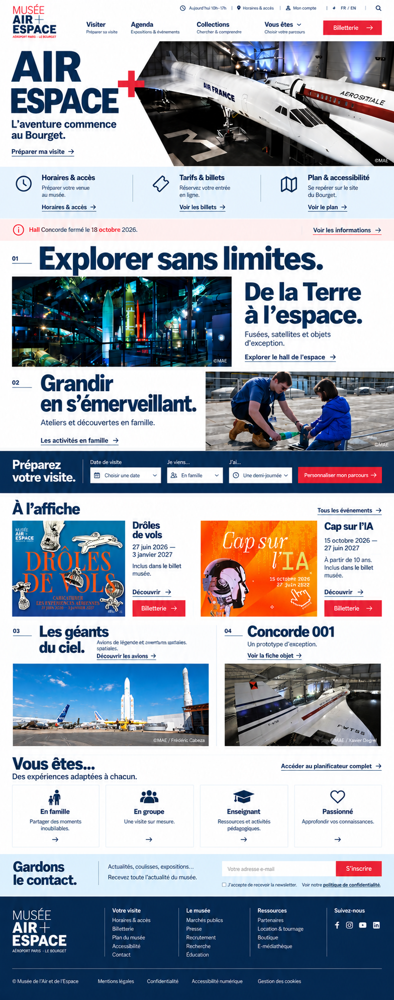
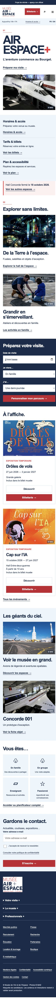
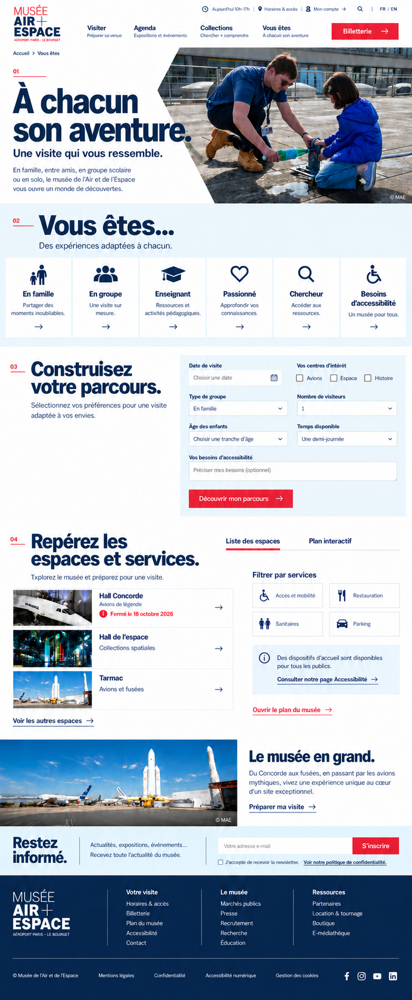
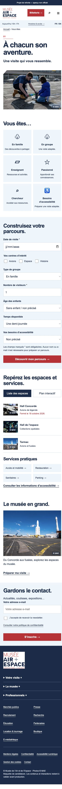
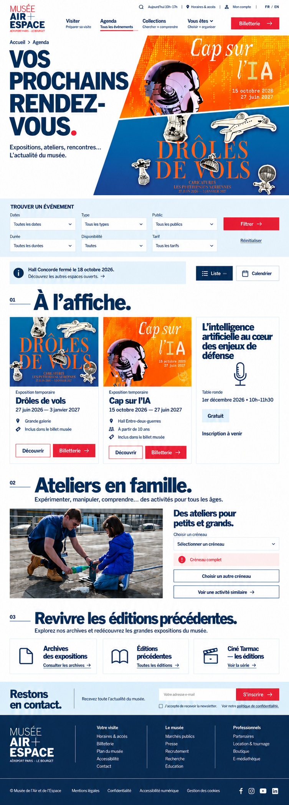
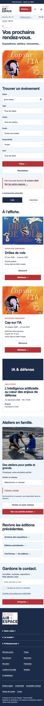
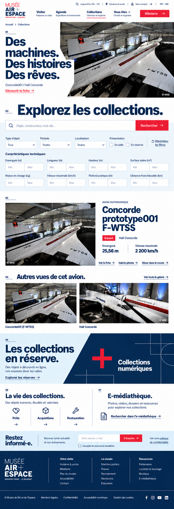
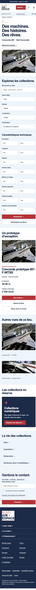
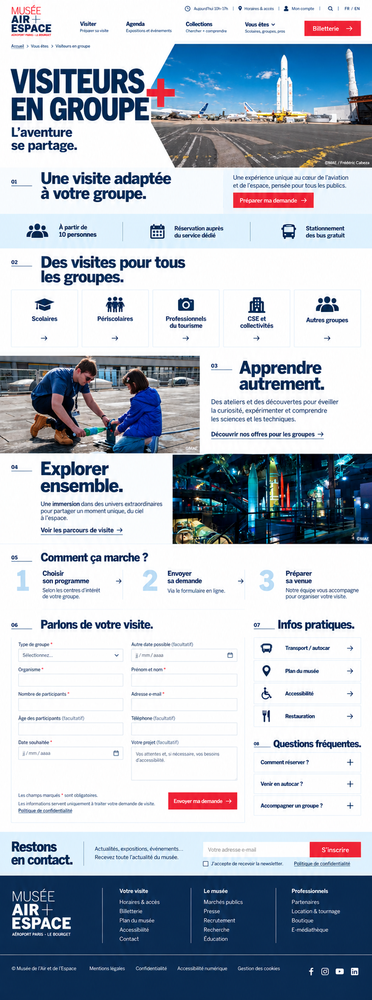
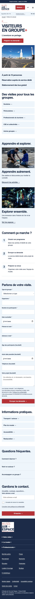

Requirement coverage and limits
The tender requests five pages in desktop and mobile: home, Vous êtes, agenda, collections and group visitors. This gallery contains all ten B page concepts.
Reviewed features include practical/ticket access, audience planning, agenda filters and alternatives, collections search/technical criteria, group enquiries and institutional links. Slot availability is an illustrative state, not live See Tickets inventory.
Static images cannot establish sticky navigation, working search/APIs, CMS permissions, translation, RGAA compliance, privacy, security or performance. InterFace files/licence still need confirmation; original assets and exact text are used in the mobile preview. Supplementary interaction states and functional/contractual evidence remain tracked separately.
Homepage
Practical access, closure notice, dated exhibitions, visit planner and audience choices.


Vous êtes
Seven planning criteria, six audience profiles, space list, services and map access.


Agenda
Six filters, free/included exhibitions, illustrative sold-out alternatives and archives.


Collections
Search, display/location/period/type filters, eight technical criteria and verified object details.


Group visitors
Group categories, published practical information, optional/required enquiry fields and privacy.


Desktop concepts created using built-in image generation. Mobile views captured from the responsive HTML/CSS preview using original museum photographs and posters. This gallery does not submit a tender offer.